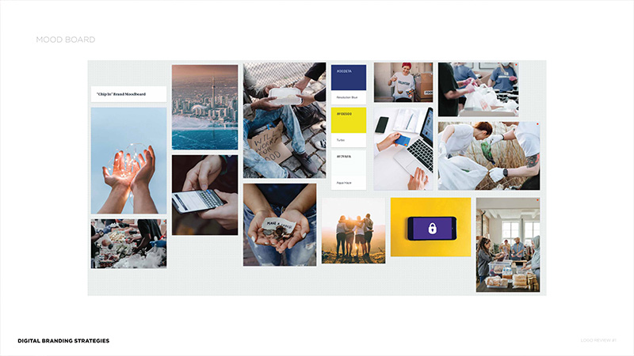
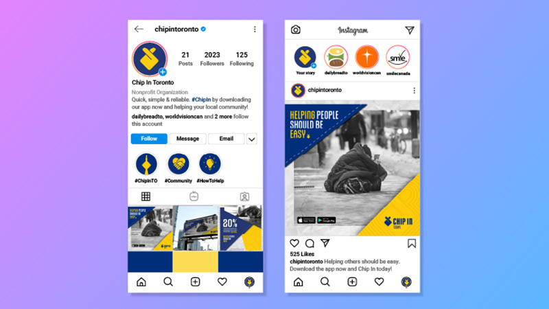

"Chip In": Helping People Made Easy

Project Type
- Branding
Role
- Videographer
- Video Editor
- Designer
Duration
- January 2023 - March 2023
Team
- Lorenzo Queano - Designer, Videographer & Video Editor
- Anne Garcia - Talent, UX/UI Designer/Researcher
- Restie Descaller - Graphic Designer
Software
- Adobe Premiere Pro
- Adobe Photoshop
- Adobe Illustrator
Other Tools Used
- iPhone 12 Pro Max
- Smartphone Video Rig
Working in a team, we were tasked to combine all the skills of a multimedia designer by creating a brand from scratch with a final deliverable being a full-fledged pitch video.
Week by week, we inched closer and closer to creating a whole carefully thought out brand. From creating lean templates to think of how the structure of our digital service would be like, we came up with many ideas. Eventually, we landed on the idea of creating a donation platform that would appeal to a younger demographic. We found that most people are willing to help but do not have the time to do so due to busy lifestyles. I, then, came up with a moodboard to have a reference on how the overall feel and theme of the app should feel and look like.
After various iterations of the logo, reworking how a coin could be worked into it, I had the idea of creating an icon out of the current "heart finger" trend. This gives the image of what fingers could look like while holding a coin while being a symbol of love. I also put together a social media mockup to further imagine how the "Chip In" brand can present itself on the online sphere.
Although we worked on most aspects of the project as a group, I took full control of the video production part of the work. From the planning shots, shooting them myself and editing footages in post, I put together the final pitch video for the project. Check out the video below!
You May Also Like


Let's create together!
I am currently seeking full time opportunities and I am always open to chat about anything multimedia design — from video production to UX/UI to social media.
Let's get connected!
lorenzo.queano@gmail.comLQ ©2023